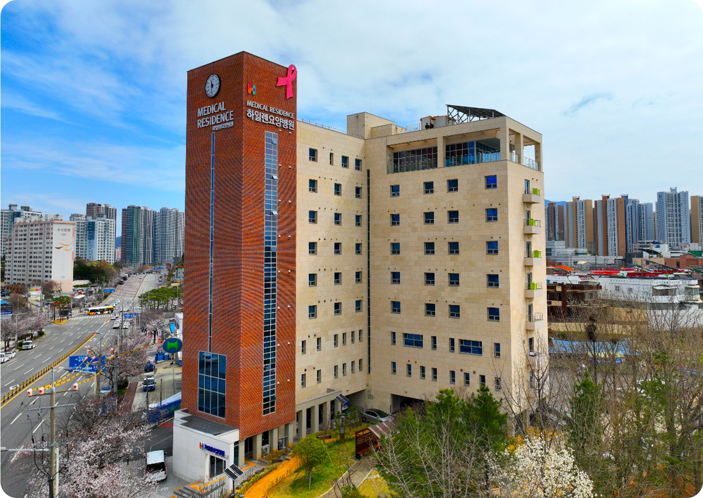
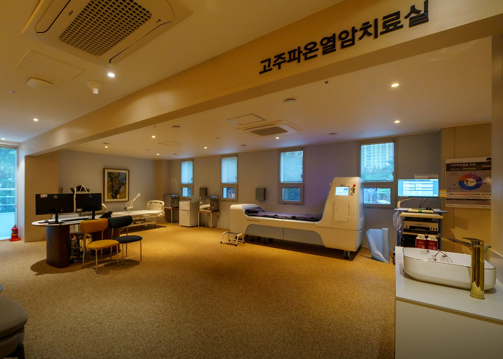
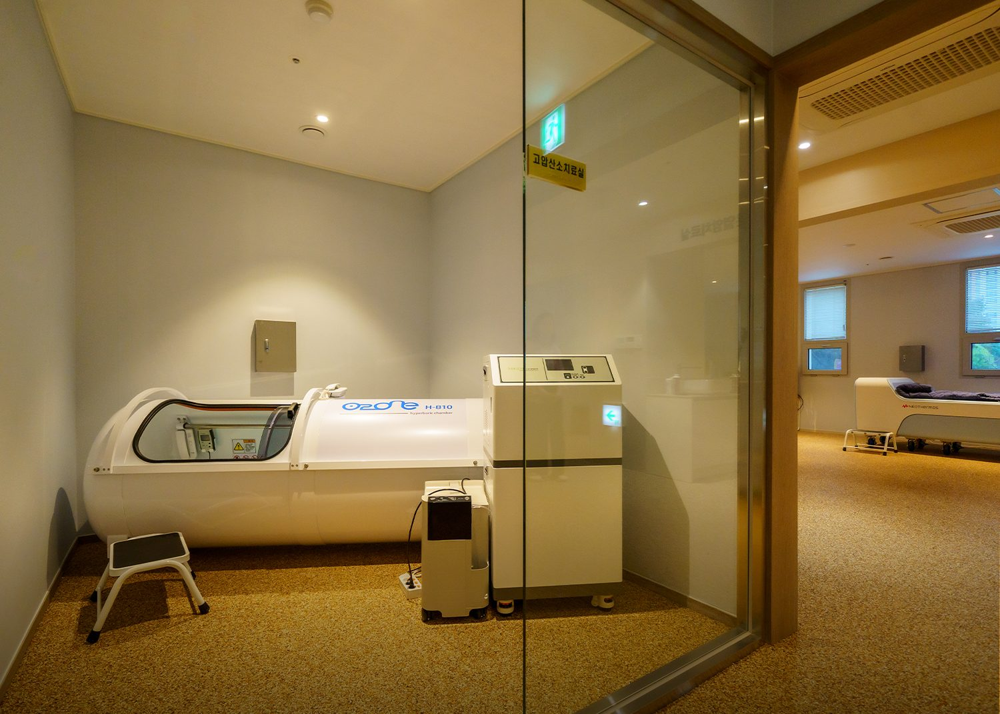
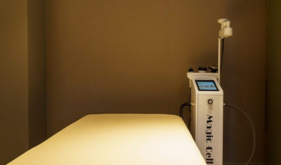
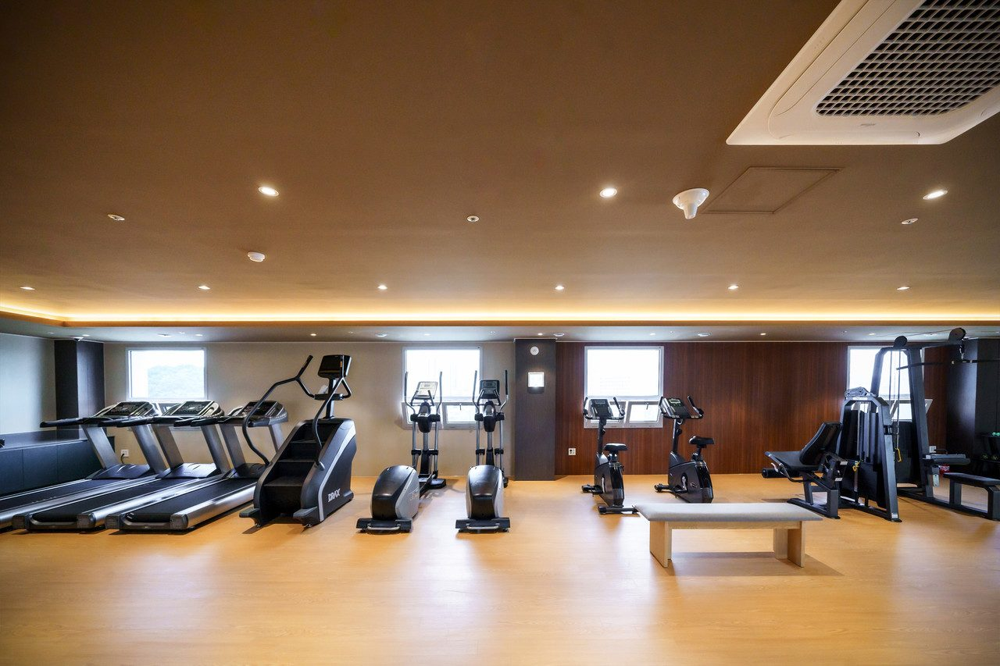
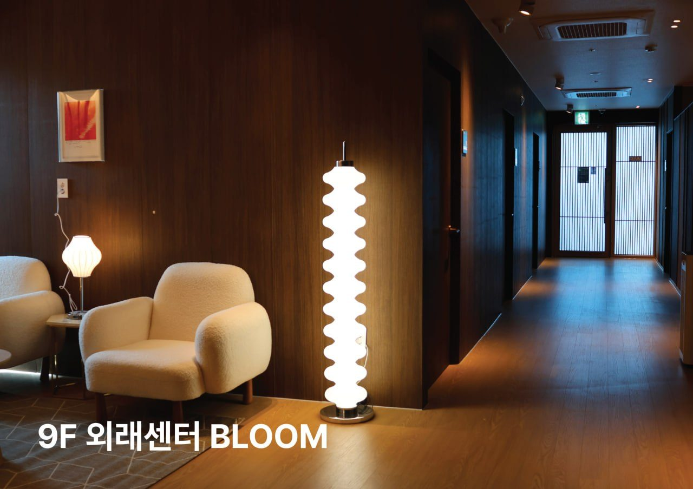
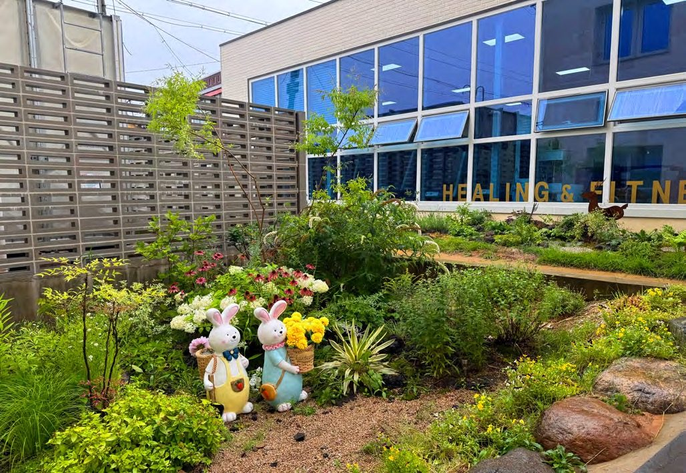

치료센터 안내
하일렌요양병원은 입원부터 외래까지, 치료 이후의 회복 여정을 함께합니다. 치료센터는 온열암치료센터, 암재활 림프 순환센터, 면역 및 통증 치료센터, 외래센터 블룸, 2층 회복 정원의 다섯 공간으로 나뉩니다. 이 페이지는 다섯 공간이 각각 무엇을 하는 곳인지 설명합니다.

- 공간
- 온열암치료센터 · 암재활 림프 순환센터 · 면역 및 통증 치료센터 · 외래센터 블룸 · 2층 회복 정원
- 외래 회복치료
- 고주파온열암치료 · 고압산소치료 · 도수치료 · 림프 관리 · 고용량 비타민C · 면역 주사제 · 영양공급수액
- 이용
- 입원 환자와 외래 환자가 함께 이용합니다. 단기입원은 1박 2일부터입니다.
- 문의
- 원내 상담실 · 카카오톡 채널 · 062-439-1000
온열암치료센터
전신온열치료 · 고주파온열암치료 · 고압산소치료를 하는 곳입니다. 온열암치료실은 2층에 있습니다.


고주파온열암치료는 고주파를 암조직에 가하는 온열 치료법입니다. 고압산소치료는 고농도의 산소를 흡입하는 치료법입니다. 전신온열치료는 몸 전체에 열을 가하는 치료법입니다.
[디렉터 확인] 전실 온열실(전신온열치료)의 현재 운영 여부 · [디렉터 확인] 고압산소치료 표기의 확정 기록(8월 도입 검토 항목이었으나 10월 공지에 운영 중으로 적힘)
암재활 림프 순환센터
림프부종 치료 · 도수치료 · 암재활 그룹 운동치료 · 통증치료를 하는 곳입니다. 재활치료실(통증·도수·림프)은 3층에 있습니다.


운동 범위는 주치의가 환자 상태를 보고 환자와 상담을 통해 결정합니다. 암재활 그룹 운동치료에는 걷기 운동 프로그램이 따로 없습니다.
도수·림프·통증·고주파 치료는 외래 환자도 입원 환자와 같은 시설에서 받으실 수 있습니다.
[디렉터 확인] 림프 순환센터 안내 배너의 실제 구성이 확정 표기 4종과 같은지 · [디렉터 확인] 저출력 레이저의 현재 운영 여부와 「레이저치료실」 표기 유지 여부
면역 및 통증 치료센터
면역 주사제와 통증·자율신경 주사치료를 하는 곳입니다. 면역주사실은 2층에 있습니다.
상처·배액관·케모포트는 간호팀 및 주사·상처관리팀이 살핍니다. 하나의 팀이 이어서 봅니다.
비용은 비급여·비용 페이지의 표를 보시면 됩니다.
[디렉터 확인] 면역 주사제의 항목별 이름(상품명·성분명)을 홈페이지에 적을지와 그 범위 · [디렉터 확인] 면역 주사제 안내 문안의 병원장 확인
외래센터 블룸
외래 환자를 위한 치료·회복 공간입니다. 9층에 있습니다.

리클라이너 주사실, 세라젬 의료기기, 소금편백찜질방, 발마사지기가 있어 휴식과 치료를 함께 누리실 수 있습니다. 몸에 좋은 차도 함께 준비되어 있습니다.
외래로 받을 수 있는 회복치료 7종과 이용 방법은 단기입원·외래 안내에서 설명합니다. 각 치료를 어느 센터에서 받는지는 [디렉터 확인] 외래 회복치료 7종의 센터별 배정이 확정되면 적습니다.
[디렉터 확인] 외래센터 블룸의 운영시간
2층 회복 정원
정원 · 어싱장 · 편백 족욕이 있는 자연 회복 공간입니다. 2층 로비 앞에 있습니다.

가드닝 클래스에서 환자분들이 심었던 정원은 겨울을 지나 초록빛으로 무르익었고, 새로 조성한 정원 공간도 나란히 문을 열었습니다. 그 사이에 맨발로 흙을 밟으며 걸을 수 있는 어싱장과 따뜻한 물에 발을 담글 수 있는 편백 족욕 시설이 있습니다.
맨발로 흙을 밟는 어싱장은 1층과 2층 로비 앞 두 곳에 있습니다. 정해진 시간 없이 낮 동안 언제든 걸으실 수 있고, 잔잔한 음악이 흐릅니다. 걷고 나면 바로 옆 편백 족욕에서 발을 담그실 수 있습니다.
[디렉터 확인] 「어싱장」이 원내 확정 명칭인지(기존 홈페이지 표기에서 「항암」을 뺀 명칭)
층별 안내
| 층 | 공간 | 안내 |
|---|---|---|
| 1층 | 갤러리(면회 장소) | 환자와 보호자가 함께 머무는 휴식 공간입니다. 면회 기준은 오시는 길·면회에서 안내합니다. |
| 1층 | 어싱장 | 로비 앞에 있습니다. |
| 2층 | 회복 정원 | 로비 앞에 정원, 어싱장, 편백 족욕이 있습니다. |
| 2층 | 온열암치료실 · 면역주사실 | 온열암치료센터와 면역 및 통증 치료센터의 치료 공간입니다. |
| 2층 | 탈의실 및 샤워장(온열암치료실) | 온열암치료실 이용자를 위한 탈의실과 샤워장입니다. [디렉터 확인] 공용샤워실 운영 여부 |
| 2층 외부 | [디렉터 확인] 2층 외부 운동 공간(개인 운동 공간·퍼팅 연습 공간)의 확정 명칭 | 확정 명칭이 정해지면 적습니다. |
| 3층 | 재활치료실(통증·도수·림프) | 암재활 림프 순환센터의 치료 공간입니다. |
| 9층 | 외래센터 블룸 | 외래 환자를 위한 치료·회복 공간입니다. |
| 9층 | 소금편백찜질방 | 온열 환경 속 편안한 휴식 공간입니다. |
| 10층 | 스카이라운지 식당 | 평소 식사 및 다과를 즐기는 장소이며, 외부 초청 공연 등 다양한 문화 활동이 이뤄집니다. |
| 10층 | 힐링프로그램실 및 기도실 | 정서 회복 및 환자들 간의 자유로운 그룹 활동 공간입니다. 기도실은 개인 명상 또는 개인 종교에 따른 기도 모두 가능한 공간입니다. |
치료센터 이용과 입원·외래·단기입원 상담은 원내 상담실에서 안내합니다. 궁금한 점이 있으시면 언제든 물어보세요.
제공 하일렌요양병원 · 검토 [디렉터 확인] 검토 의료진 · 검토일 [디렉터 확인] 검토일 · 갱신 2026-10-05 · 출처 하일렌 소식지 2026 여름호·가을호, 홈페이지 긴급점검 교체 문안, 발행정본 확정 표기